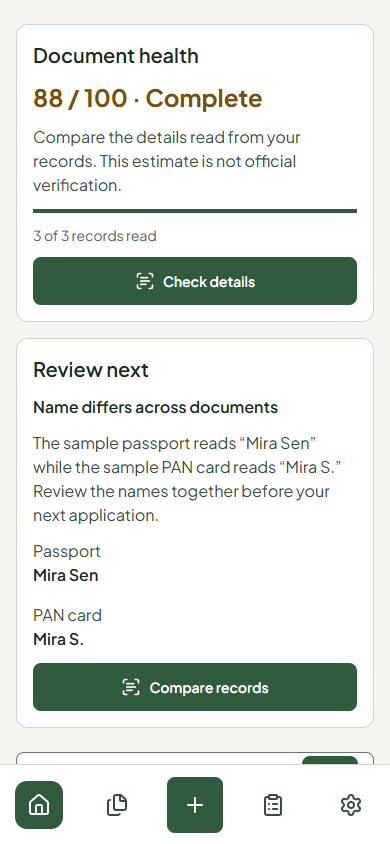

Bring your records together
Add your IDs and certificates. Read their text and check the extracted details against the originals.
A name on your Aadhaar. A different spelling on your marksheet. Find the differences before you fill the form.
Docyard checks your records privately, on your device—then helps you prepare the files you need.
For Windows & Android · Alpha access updates
Compare the originals. Decide what needs correcting.
Illustrative example · Not a real identity record
Compare across documents
Check offline, on your device
Keep originals intact
For exam forms, a small difference can become a last-minute scramble. Give your documents a second look while there’s time.
Add your IDs and certificates. Read their text and check the extracted details against the originals.
See possible name and birth-date differences across records, with the source documents beside them.
Open relevant correction guidance and official links. Docyard helps you review; the issuing authority makes corrections.
The current Docyard app. A fictional vault you can explore.
Keep scrolling. Expand when you want to explore.
Review a sample name difference. The current app interface, with fictional records.
Shared app interface · fictional dataA sample vault in your browser. Changes reset on reload. Adding a file inserts a fictional document; OCR, compression, and protection are simulated. Demo PIN: 2468.
Your document health comes first. Your files and application checklists stay close behind.
Windows and Android each keep a local vault. No automatic cloud sync.
Join the alpha
The rest of your paperwork, in the same place.
Preview PDFs and images. Search names and extracted text. Organize files for each application.
Crop, resize, compress or watermark. Keep the original and check the portal’s requirements.
Export an encrypted handoff to the separate browser extension. Review details and document attachments before filling supported forms.
Encrypted local storage. Offline document checks. No upload needed to compare your records.
Opening official guidance uses the web. Sharing a file or using extension autofill sends only what you choose to share. Text extraction can miss details—always review originals.
Read the privacy policyHelp shape Docyard for exam aspirants. Join the alpha list for access and availability updates.
No document uploads. Just your email.
No. It flags possible differences for your review and offers relevant guidance. Corrections happen through the issuing authority.
No. It reflects the records and extracted details available to the app. It does not confirm authenticity, eligibility or acceptance by a portal.
Public downloads are not offered on this alpha page. Join the list for access updates.
Yes. The demo uses the current app interface with fictional records. OCR, compression and encryption are simulated in the browser. Changes reset on reload.
No. It supports compatible form fields after you review what to share. Some uploads need manual steps. Android needs an extension-capable browser; regular Android Chrome does not support extensions.
A question, an idea, or something that isn’t working? Send us a message.
Please leave out document contents, identity numbers, passwords, and your vault PIN.
Or email contact@docyard.live